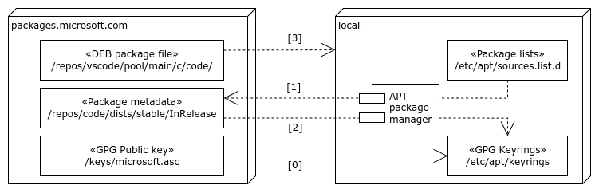

Microsoft gave us a lot of programs as Ubuntu/Debian packages.
In this post, I will show you how to manage Edge and VSCode packages with APT package manager.
APT is stands for
Advanced Package Tool.
Why?
Simple. I want to upgrade them easily with APT package manager rather than using dpkg command.
sudo apt-get update -y && sudo apt-get upgrade -y
When I installed Microsoft Edge and Visual Studio Code, I used dpkg command.
But, It is little burdensome to manage packages with dpkg command in Update/Upgrade.
So, I want to manage them with APT package manager instead of dpkg command.
Beyond of the ~basic~ security vulnerability of applications,
I have to upgrade them to use useful features.
Such as GitHub Copilot Chat in VSCode, a.k.a. my long time friend for coding. LoL.
Structure
As I’m just one of Ubuntu users, I’m little bit understood about how APT package manager works.
And, I summarized them as below.

If you have more idea about this, please let me know via comments. It will be helpful for newbie, me. :)
(0) Add Microsoft GPG Key
First, you need to add Microsoft GPG Key to your system.
There are neither
CORRECT ANSWERnorINCORRECT ANSWERfor this.
All is up to you.
# Option 1
wget -qO- https://packages.microsoft.com/keys/microsoft.asc | gpg --dearmor > packages.microsoft.gpg
sudo install -D -o root -g root -m 644 packages.microsoft.gpg /etc/apt/keyrings/packages.microsoft.gpg
# Option 2
curl https://packages.microsoft.com/keys/microsoft.asc | gpg --dearmor > microsoft.gpg
sudo mv microsoft.gpg /etc/apt/trusted.gpg.d/microsoft.gpg
(1) Add Microsoft Repository to get Package metadata
At first, you need to add Microsoft Repository to your system.
So, APT package manager can find Microsoft packages.
# Microsoft Edge
echo "deb [arch=amd64] https://packages.microsoft.com/repos/edge stable main" | sudo tee /etc/apt/sources.list.d/microsoft-edge.list
# Visual Studio Code
echo "deb [arch=amd64] https://packages.microsoft.com/repos/vscode stable main" | sudo tee /etc/apt/sources.list.d/vscode.list
There are also neither
CORRECT ANSWERnorINCORRECT ANSWERfor this. Alternative naming formicrosft-edge.listandvscode.listare up to you.
- e.g.) Below also works for Visual Studio Code.
sudo sh -c 'echo "deb [arch=amd64 signed-by=/etc/apt/keyrings/packages.microsoft.gpg] https://packages.microsoft.com/repos/code stable main" > /etc/apt/sources.list.d/vscode.list'
(2) Decryption metadata with Microsoft GPG Key
APT package manager already hits Microsoft Repository to get metadata.
e.g.) https://packages.microsoft.com/repos/<package-name> stable InRelease
So, APT package manager decrypts metadata with Microsoft GPG Key.
If you don’t have Microsoft GPG Key, you will get errors.
(3) Install Microsoft DEB packages
Finally, APT package manager installs Microsoft DEB packages on your behalf!
Descriptions
Microsoft’s GPG public key
You could verify the Microsoft GPG public key.
See, How to use the GPG Repository Signing Key
How Microsoft signs the packages with GPG public key
You have Microsoft GPG public key to verify the packages in installation.
(…) in deb-based distributions it is common to sign the repository metadata but not the individual debs. Microsoft signs both the individual packages and the repository metadata for both types of distributions. (…)
How looks like InRelease file
-----BEGIN PGP SIGNED MESSAGE-----
Hash: SHA256
Origin: code stable
Label: code stable
Suite: stable
Codename: stable
Date: Fri, 28 Feb 2025 12:18:34 +0000
Architectures: amd64 arm64 armhf all
Components: main
Description: Generated by aptly
Acquire-By-Hash: yes
SHA256:
(...)
SHA512:
(...)
-----BEGIN PGP SIGNATURE-----
Version: BSN Pgp v1.0.0.0
(...)
-----END PGP SIGNATURE-----
My Screenshots
- When I upgrade my system from 22.04 LTS Jammy to 23.10 Mantic, APT sources are disabled.


- My GPG public keyrings for update/upgrade

- My sources.list.d and APT package manager hits Microsoft Repositories properly.
I’ll remove
vscode.list.distUpgradeandvscode.sourcesfiles.


References

kkumtree
Source code on GitHub
© 2025 kkumtree and contributors All rights reserved.
Licensed under
CC BY-NC-ND 4.0